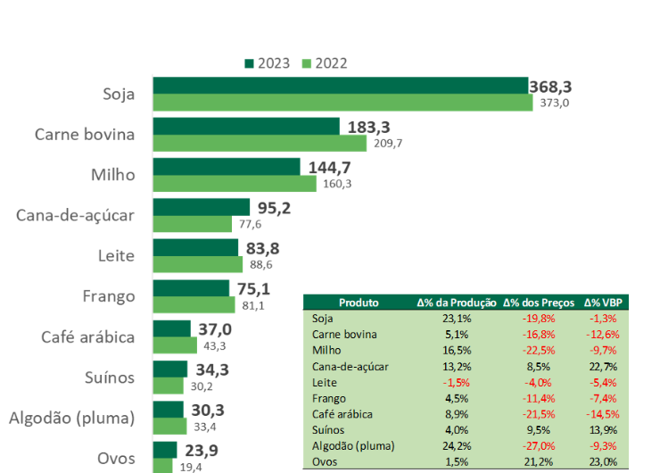

O CAMPO E A CIDADE POSSUEM INTERLIGAÇÃO E UM DEPENDE DO OUTRO.
O campo é compreendido pela zona rural, formado por propriedades rurais como: fazendas, chácaras e sítios. A cidade é formada pela zona urbana, onde vive, atualmente, a maioria das pessoas. Nas cidades são instalados comércios e feiras. O setor primário é pertencido ao campo, responsável pela produção de matéria prima como: leite, ovos, carnes, algodão, lã, cereais, plantações e etc.
Logo em seguida, pessoas que trabalham no campo colhem os seus feitos na terra e vem para cidade para vender os seus cultivos. Com a migração do campo para a cidade tem sido uma realidade constante ao longo dos anos, impulsionada por uma série de fatores que vão desde a busca por melhores condições de vida até a procura por oportunidades de emprego e educação.
Comparativo 2023-2022 dos 10 principais produtos do VBP da agropecuária (R$ bilhões)

Saldo da Balança Comercial Brasileira de 2010 a 2023 (em US$ bilhões)
.png)
Produção e Exportações Brasileiras no Ranking Mundial em 2023
.png)